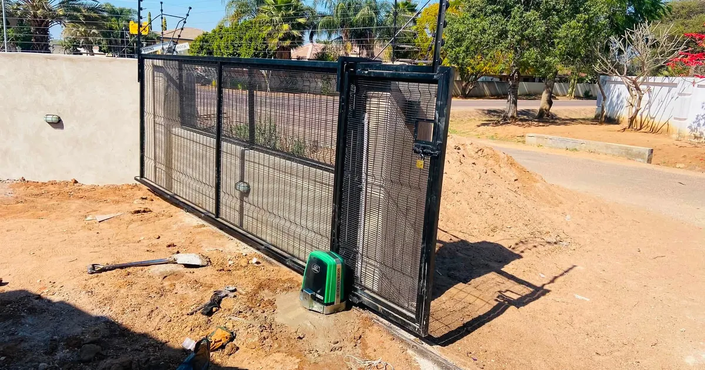
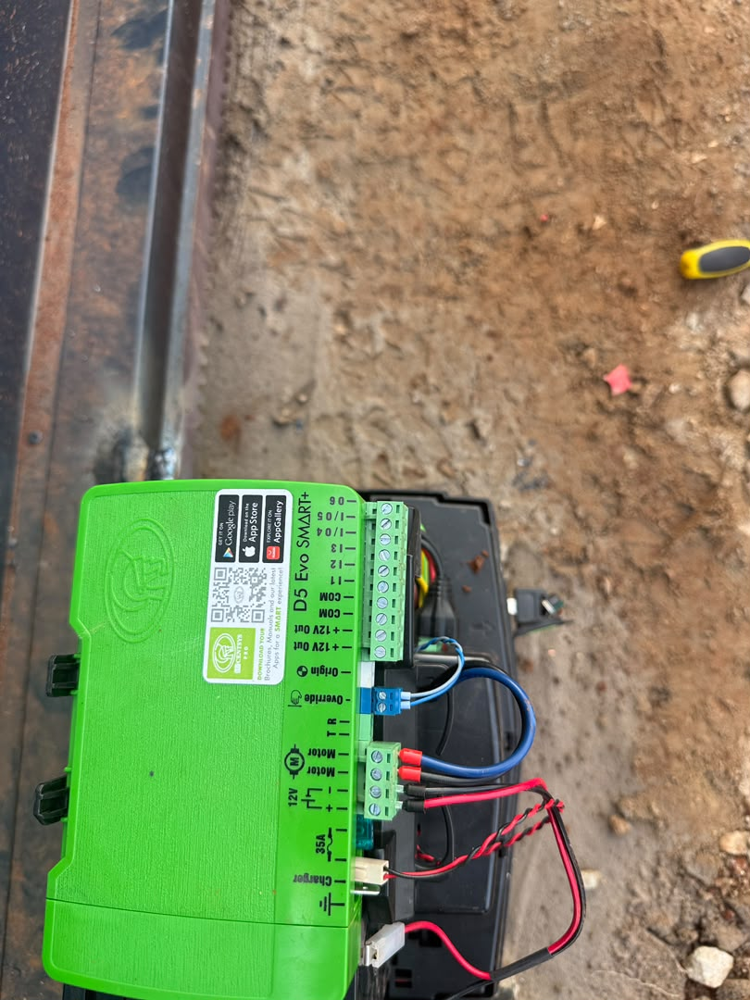

Quick answer
The motor is matched to the gate, not the other way round. Sliding gates use a sliding-gate motor and swing gates use a swing-gate kit. For sliding gates, the Centurion D5 suits gates up to about 500 kg (most homes) and the D10 suits heavier gates up to about 1,000 kg (farms, businesses and industrial sites). Most sound gates can be motorised without being replaced, and a site visit confirms the gate weight, condition and power supply before you are quoted.

What an electric gate motor does
A gate motor opens and closes the gate for you, controlled by a remote, keypad, intercom or phone app depending on the model. Most modern motors include a backup battery, so the gate keeps working through a power cut, which matters in Zimbabwe, where outages are part of daily life.
Swing gate or sliding gate?
Your gate decides the motor. Sliding gates run along a track and use a sliding-gate motor mounted beside the gate. Swing gates pivot on hinges and use arm-type swing kits, one per leaf. If you are building a new entrance, choose the gate that suits your driveway first, then match the motor to it.
| Sliding gate | Swing gate | |
|---|---|---|
| Space needed | Room beside the opening for the gate to slide into | Clear space behind the gate for the leaves to swing |
| Best for | Sloped driveways, short driveways, heavy gates | Wide, level driveways with space inside the gate |
| Motor | One sliding motor (for example Centurion D5 or D10) | A swing kit with one arm per leaf |
D5 or D10: which sliding motor?
The two sliding motors we install most often are the Centurion D5 and D10. Both use a DC motor with battery backup. The difference is the weight of gate they are built to move.
| Motor | Gate weight | Typical use |
|---|---|---|
| Centurion D5 (Evo / Evo Smart+) | Up to about 500 kg | Most residential driveway gates |
| Centurion D10 | Up to about 1,000 kg | Larger steel gates on farms, commercial and industrial sites |
The D5 Evo Smart+ can also be controlled from a phone app, which is useful when you want to let a visitor or delivery in while you are away. The right choice depends on the actual weight and build of your gate, which is why we check it on site rather than guessing.

Can my existing gate be motorised?
Usually, yes. If the gate is structurally sound, square and moves freely by hand, a motor can be fitted to it. A motor will not fix a bad gate, though. Before installation, check for:
- rust through the frame or at the bottom rail;
- weak or worn hinges on a swing gate;
- a bent or uneven track and worn wheels on a sliding gate;
- a gate that drags, sticks or has to be lifted to close.
These are fixed first. A gate that is hard to push by hand will wear out a motor and its battery quickly.
What affects the installation cost
- Gate weight and size: a heavier gate needs a D10 instead of a D5.
- Gate condition: repairs or reinforcement before the motor goes on.
- Sliding or swing: different motors, rails and fittings.
- Distance to power: a longer cable run adds material and labour.
- Extras: keypads, more remotes, intercoms, safety beams or more battery capacity.
Gates vary too much for an accurate price over the phone. A site visit gives you a quote that reflects your actual gate.
Battery backup and power cuts
The backup battery is a service item. Its capacity falls with age, so a battery that coped with last year's outages may manage far fewer opening cycles now. Test the gate with the mains switched off every few months, and make sure the household knows how to use the manual release safely. Our guide to home security during power cuts has a simple test you can follow.
How long installation takes
Most installations are finished in a day once the motor and materials are on site. If the gate needs repairs first, we confirm the timing after the site visit.
Gate motors and fencing work best together
A motor secures the entrance. The fence secures the rest of the boundary. Because Azzar supplies and installs both, customers upgrading their perimeter often motorise the main gate at the same time, as one job with one team. See our clearview fencing guide or the electric gate motor page.
What to send for a quote
Send your location, whether the gate slides or swings, its approximate width, a few photos of the gate, track or hinges, and where the nearest power point is. We will confirm whether it is a D5 or D10 job and arrange a free site visit.
Get a quote from Azzar
Send us your location, what you need and a few photos. We reply with a recommendation and a no-obligation quote, and arrange a free site assessment if one is needed.